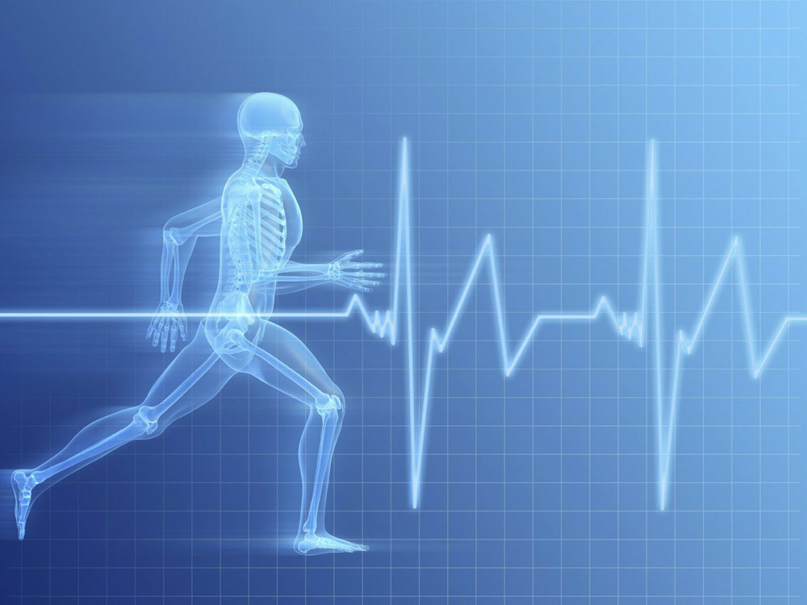
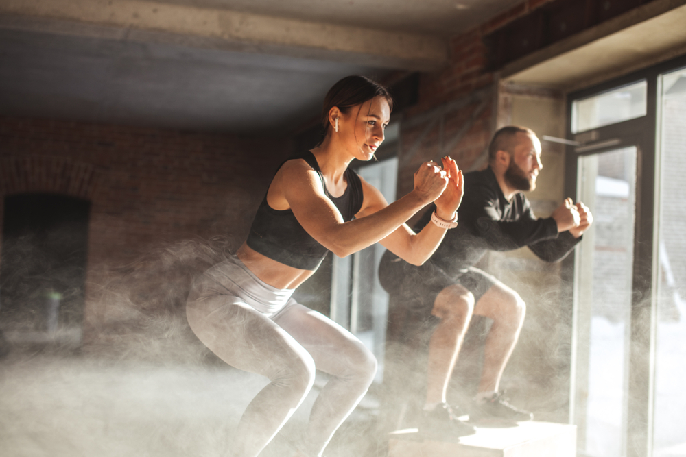
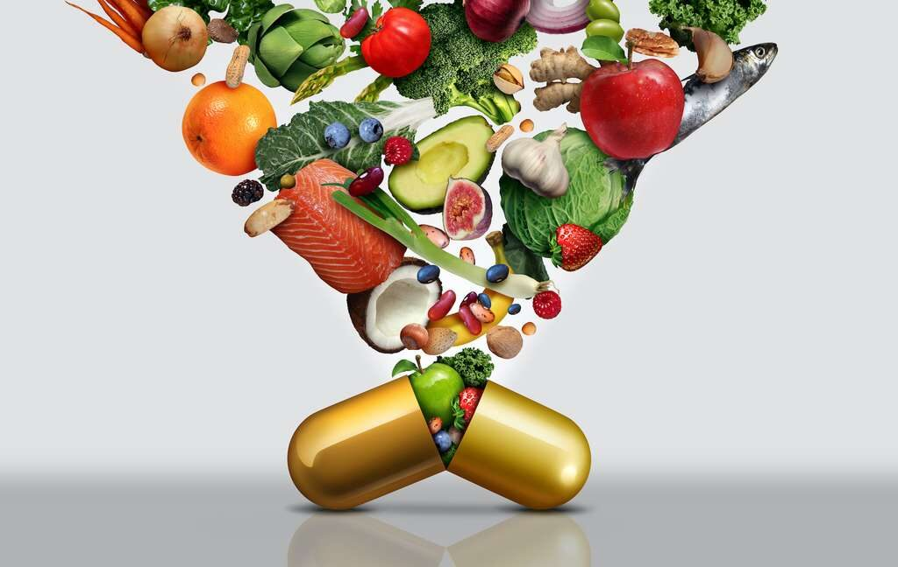
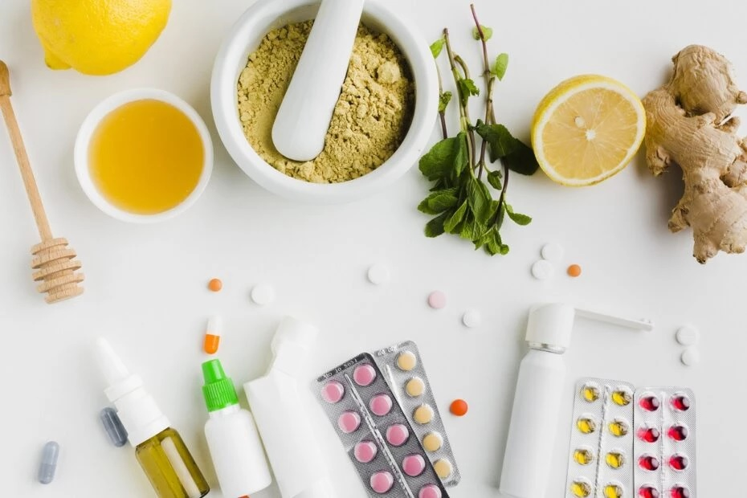

Articol despre sport
Beneficii ale practicării sportului
Practicarea sportului aduce numeroase beneficii pentru sănătatea fizică și mentală. Printre acestea se numără:
- Îmbunătățirea stării de sănătate cardiovasculară.
- Reducerea riscului de boli cronice, precum diabetul sau hipertensiunea arterială.
- Creșterea nivelului de energie și rezistență fizică.
- Îmbunătățirea somnului și reducerea stresului și anxietății.
Cum să începi o rutină sportivă

Pentru cei care doresc să înceapă o rutină sportivă, este important să luați în considerare câteva aspecte:
- Stabiliți obiective realiste pentru fitness.
- Alegeți un sport sau o activitate fizică care vă place.
- Începeți cu intensitate scăzută și creșteți treptat.
- Includeți exerciții de încălzire și de întindere înainte și după antrenament.
Sfaturi pentru menținerea rutinei sportive
Menținerea unei rutine sportive poate fi o provocare, dar iată câteva sfaturi care vă pot ajuta:
- Găsiți un partener de antrenament pentru a vă menține motivați.
- Stabiliți un program regulat de antrenament și respectați-l.
- Experimentați cu diferite tipuri de sport pentru a evita monotonia.
- Recompensați-vă pentru realizările voastre în fitness.
Sportul poate fi o modalitate minunată de a vă menține sănătoși și de a vă bucura de o viață activă. În continuare, veți găsi mai multe informații și sfaturi pentru a vă ajuta să vă atingeți obiectivele de fitness.
Articol despre suplimente
Suplimentele și beneficiile lor
Suplimentele alimentare sunt produse care furnizează substanțe nutritive, cum ar fi vitamine, minerale, proteine sau aminoacizi, care pot ajuta la îmbunătățirea sănătății și performanței fizice.
Există o varietate de suplimente disponibile pe piață, fiecare având scopuri specifice. De exemplu, suplimentele de vitamine pot ajuta la corectarea deficiențelor nutriționale, în timp ce proteinele pot contribui la creșterea masei musculare. Este important să consultați un profesionist din domeniul sănătății înainte de a începe orice regim de suplimente.
Cum să alegeți și să utilizați suplimentele
Atunci când luați în considerare utilizarea suplimentelor, este important să țineți cont de următoarele:
- Consultarea unui medic sau a unui dietetician pentru a vă determina nevoile nutriționale.
- Cumpărarea de produse de înaltă calitate de la surse de încredere.
- Respectarea dozelor recomandate și a instrucțiunilor de pe ambalaj.
- Monitorizarea reacțiilor adverse și încetarea utilizării dacă apar efecte secundare neplăcute.